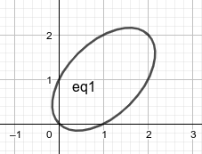

解关于 `x, y` 的不定方程 `a x y+b x+c y+d = 0`, `a, b, c, d` 为整数.
两边同乘 `a` 以后变形为 `(a x+c)(a y+b) = b c-a d`, 再讨论 `b c-a d` 的因子即可.
解关于 `a, b, c, d` 的不定方程 `1/a + 1/b + 1/c + 1/d = 1`, `a, b, c, d` 是两两不相等的正整数.
解关于 `x, y` 的不定方程 `x^2 + 615 = 2^y`.
[来自 我是小学二年级的屑] 求 `{ x y = 4 n; x+y = n+2 :}` 的正整数解.
求 `(x+y)^2 = x^3 + y^3` 的正整数解.
两边同时约去正因子 `x+y` 得 `x+y = x^2 - x y + y^2`, 这是椭圆的方程, 由图像我们推测正整数解只有 `(1,2)`, `(2,1)`, `(2,2)`.  [来自 我是费马方程的正整数解] 上式视为 `x` 的方程, 令它的判别式 `ge 0`, 我们得到 `y = 1, 2`, 从而轻松得到结果.
求 `x^3 + y^3 = z^2` 的正整数解.
令 `(x, y, z) = (a c, b c, c^2)`, 问题化为 `a^3 c^3 + b^3 c^3 = c^4`, 显然 `c != 0`, 得 `a^3 + b^3 = c`. 任取 `a, b in ZZ^+`, `(x, y, z) = (a (a^3+b^3), b (a^3+b^3), (a^3+b^3)^2)` 都给出原方程的一组正整数解; 如 `a=1, b=1` 时得到 `(2, 2, 4)`, `a=1, b=2` 时得到 `(9, 18, 81)` 等. 其它形式的解??
[来自 马上开学的菜狗] 求 `x^3 + y^3 = x^2 y^2` 的正整数解.
[来自 小猿搜题] 取参数 `t = x // y`, 方程化为 `(t^3+1) y^3 = t^2 y^4`, 从而 `{ x = t^2 + 1//t; y = t + 1//t^2 :}` `t = 1` 时, 得到一组解 `x = y = 2`. `t gt 1` 时, ??
[来自 叉叉子] 证明不定方程 `2x^4 = y^4 - 17 z^4` 只有平凡解 `x = y = z = 0`.
由于方程齐次, 不妨令 `gcd(x, y, z) = 1`, 考虑 mod 17 的可能余数: `{: 2x^4, y^4, 17z^4; 0, 0, 0; +-2, +-1, ; +-8, +-4, ; :}` 等式不能成立, 一个矛盾.
由熟知的勾股定理 (Pythagorean theorem), 直角三角形的三边长 `a, b, c` 满足 `a^2+b^2=c^2`. 我们称满足上述不定方程的正整数 `a, b, c` 为一组勾股数 (Pythagorean triple), 如 `3, 4, 5`; `5, 12, 13`; `7, 24, 25` 等. 以勾股数为边长的直角三角形叫勾股三角形. 注意到像 `3, 4, 5` 与 `6, 8, 10` 是本质相同的勾股数, 故定义勾股数 `a, b, c` 是本原的, 如果 `gcd(a, b, c) = 1`.
本原勾股数 `a, b, c` 两两互素, 且 `c` 为奇数, `a, b` 一奇一偶.
设 `d = (a, b)`, 则 `d^2 | a^2 + b^2 = c^2`, 这推出 `d | c`.
于是 `d | (a, b, c) = 1`, 即 `d = 1`. 同理 `(b, c) = (c, a) = 1`.
因为 `(a, b, c)` 两两互素, 它们中的偶数不超过一个, 假设 `c` 为偶数,
则 `a, b` 为奇数. 设
`a = 2m+1`, `quad b = 2n+1`, `quad c = 2k`,
则 `a^2 + b^2 -= 2 (mod 4)`, `c^2 -= 0 (mod 4)`, 矛盾.
因此 `c` 为奇数. 注意到 `a, b` 不全为偶数, 其中一个为奇数,
则另一个为偶数.
由于 `a, b` 地位对称, 不妨设 `b` 是偶数, 则本原勾股数的全体可以表示为 `a = u^2-v^2`, `quad b = 2u v`, `quad c = u^2+v^2`. 其中 `u gt v gt 0`, `quad (u, v) = 1`, 且 `u, v` 一奇一偶.
容易说明满足上述条件的 `(a, b, c)` 确实是本原勾股数. 下证必要性.
注意 `c-a, c+a, b` 都是正的偶数, 可设
`2A = c-a`, `quad 2B = b`, `quad 2C = c+a`,
`A, B, C` 为正整数. 因为 `b^2 = c^2 - a^2 = (c-a)(c+a)`, 我们有
`B^2 = A C`.
下证 `A, C` 互素. 设 `d = (A, C)`, 则
`d | C-A = a`, `quad d | C+A = c`,
从而 `d | (a, c) = 1`, 即 `d = 1`.
因为 `A C` 是平方数, 而 `A, C` 没有公共的素因子, 所以 `A, C`
都是平方数, 可设
`C = u^2`, `quad A = v^2`.
于是
`a = u^2-v^2`, `quad c = u^2+v^2`,
`b = 2 sqrt(B^2)`
`= 2 sqrt(A C)`
`= 2 u v`.
最后说明 `u, v` 满足的条件. 由 `C gt A` 有 `u gt v gt 0`.
由 `(A, C) = 1` 知 `(u, v) = 1`. 由 `a = u^2 - v^2` 是奇数知 `u, v`
一奇一偶.
可以用代数计算验证, 确实有 `(u^2-v^2)^2 + (2u v)^2 = (u^2+v^2)^2`. 由以上讨论知, 任意一个勾股三角形总是相似于边长为 `u^2-v^2, 2u v, u^2+v^2` 的三角形, 其中 `u gt v gt 0`. 代入 `(u,v) = (2,1)` 得到勾股数 `(3, 4, 5)`, 代入 `(u,v) = (3,2)` 得到勾股数 `(5,12,13)`... 试试看吧!
[来自 レイ] 证明: 单位圆上存在无数个点, 它们两两间的距离均为有理数.
[来自 折棒的网友] 记 `A(-1, 0)`, `B(1, 0)`. 对于任一组勾股数 `a^2+b^2=c^2`, 可取点 `K` 使得 `KA = 2a//c`, `KB = 2b//c`, 于是 `KA^2 + KB^2 = AB^2`, `K` 位于单位圆上. 依此法取 `K_1, K_2`, 则 `A B K_1 K_2` 是圆内接四边形, 由 Ptolemy 定理 `K_1 K_2 * AB + B K_1 * A K_2 = A K_1 * B K_2`. 因此 `K_1 K_2` 为有理数. 但勾股数有无穷多组, 所以这样的点有无穷多个.
不存在面积为平方数的勾股三角形.
Fermat 大定理 (Fermat's Last Theorem, FLT) 设整数 `n gt 2`, 则不定方程 `x^n + y^n = z^n` 不存在满足 `x, y, z != 0` 的整数解.
`133^5 + 110^5 + 84^5 + 27^5 = 144^5`
二平方和恒等式 `(x_1^2+x_2^2)(y_1^2+y_2^2) = (x_1 y_1+x_2 y_2)^2 + (x_1 y_2-x_2 y_1)^2`. 从而, 如果整数 `m, n` 能表示为两个整数的平方之和, 则 `mn` 也能.
素数 `p` 能表为两个整数的平方和当且仅当 `p = 2` 或 `p -= 1 (mod 4)`. 换言之, `4k+3` 型的素数不能表示为两个整数的平方和.
二平方和定理 正整数 `n` 能表为两个整数的平方和当且仅当它所有的 `4k+3` 型素因子在 `n` 中的次数为偶数.
本节将证明, 任意正整数可以表为四个整数的平方和. 其证明思路与二平方和定理类似.
[来自百度百科]Lagrange 恒等式 设 `n in ZZ^+`, `x_i, y_i in RR`, `i = 1, 2, cdots, n`, 则 `(sum_(i=1)^n x_i^2)(sum_(i=1)^n y_i^2)` `= (sum_(i=1)^n x_i y_i)^2 + sum_(1 le i lt j le n) (x_i y_j - x_j y_i)^2`. 从向量的角度理解: `|bm x|^2 |bm y|^2 = |bm x * bm y|^2 + |bm x xx bm y|^2`.
右边 `= sum_(i=1)^n x_i^2 y_i^2 + 2 sum_(1 le i lt j le n) x_i y_i x_j y_j + sum_(1 le i lt j le n) x_i^2 y_j^2` `- 2 sum_(1 le i lt j le n) x_i y_j x_j y_i + sum_(1 le i lt j le n) x_j^2 y_i^2` `= sum_(i=1)^n x_i^2 y_i^2 + sum_(1 le i lt j le n) x_i^2 y_j^2 + sum_(1 le i lt j le n) x_j^2 y_i^2 =`左边.
四平方和恒等式 (Euler, 1743)
`(sum_(i=1)^4 x_i^2)(sum_(i=1)^4 y_i^2) = sum_(i=1)^4 z_i^2`.
其中
`z_1 = x_1 y_1 + x_2 y_2 + x_3 y_3 + x_4 y_4`,
`z_2 = x_1 y_2 - x_2 y_1 + x_3 y_4 - x_4 y_3`,
`z_3 = x_1 y_3 - x_3 y_1 + x_4 y_2 - x_2 y_4`,
`z_4 = x_1 y_4 - x_4 y_1 + x_2 y_3 - x_3 x_2`.
从而, 如果整数 `m, n` 能表示为四个整数的平方之和,
则 `mn` 也能.
由 Lagrange 恒等式, 只需验证 `(x_1 y_2 - x_2 y_1)(x_3 y_4 - x_4 y_3)` `- (x_1 y_3 - x_3 y_1)(x_2 y_4 - x_4 y_2)` `+ (x_1 y_4 - x_4 y_2)(x_2 y_3 - x_3 y_2) = 0`. 即可. 上式的左边可由 Laplace 定理展开行列式 `|x_1,x_2,x_3,x_4; y_1,y_2,y_3,y_4; x_1,x_2,x_3,x_4; y_1,y_2,y_3,y_4|` 得到.
(Euler, 1751) 对任意奇素数 `p`, 同余方程 `x^2+y^2+1 = 0` `(mod p)` 存在整数解 `0 le x, y lt p//2`. 因此对任意奇素数 `p`, 存在正整数 `m` 和整数 `0 le x, y le (p-1)//2`, 使得 `m p = x^2 + y^2 + 1 le (p-1)^2//2 + 1` `lt (p-1)(p+1) + 1 = p^2`. 因此 `m lt p`.
模 `p` 的二次剩余 (即全体平方数 `ZZ^2` 模 `p` 的同余类)
有 `(p+1)//2` 个, 分别为
`0, 1^2, 2^2, cdots, ((p-1)/2)^2`.
若 `(p-1)//2` 是模 `p` 的二次剩余, 则存在 `0 le x lt p//2`
使得 `x^2 -= (p-1)//2` `(mod p)`, 于是 `1 + x^2 + x^2 -= 0` `(mod p)`,
定理得证.
若 `(p-1)//2` 不属于模 `p` 的二次剩余,
将模 `p` 的剩余 (即全体整数模 `p` 的同余类)
分为如下 `(p-1)//2` 组:
`{0, p-1}, {1, p-2}, cdots, {(p-1)/2, (p-1)/2}`.
而模 `p` 的 `(p+1)//2` 个二次剩余必然落在前 `(p-3)//2` 组当中.
由鸽巢原理, 必有两个二次剩余落在同一组中. 由于每一组的两个元素
`m, n` 满足 `m + n + 1 -= 0` `(mod p)`,
故存在整数 `x, y`, `0 le x, y lt p/2`,
使 `x^2 + y^2 + 1 -= 0` `(mod p)`.
四平方和定理 (Lagrange, 1770; Euler, 1773) 任何非负整数都可以表示为四个整数的平方之和, 即不定方程 `x_1^2 + x_2^2 + x_3^2 + x_4^2 = n`, `quad n ge 0` 恒有整数解.
设 `d` 为正整数, 且不是平方数, 下面的不定方程称为 Pell 方程: `x^2 - d y^2 = 1`.
Pell 方程的幂形式解 将 Pell 方程的全部正整数解 `x_k, y_k` (后面会证明 Pell 方程确实有解) 按 `lambda_k = x_k + sqrt d y_k` 的值由小到大排列, 有 `lambda_k = lambda_1^k`, `quad k = 1, 2, cdots`. 因此, 由 Pell 方程的最小正整数解 `x_1, y_1` 可以轻松得到通解.
设 `d in ZZ^+` 不是平方数, 若不定方程 `x^2 - d y^2 = n` 有最小正整数解 `x_0, y_0`, 则通解 `mu = x + sqrt d y` 由下式给出: `mu_k = mu_0 lambda_1^k`, `quad k = 0, 1, 2, cdots`. 其中 `lambda_1` 对应 Pell 方程 `x^2 - d y^2 = 1` 的最小正整数解.
化简 `root 3 (20+14sqrt2)`.
记 `lambda = x + y sqrt2`, 其共轭 `lambda' = x - y sqrt2`. 如果 `lambda^3 = 20+14 sqrt2`, 则有 `(x^2 - 2 y^2)^3` `= (lambda lambda')^3` `= lambda^3 (lambda^3)'` `= (20 + 14 sqrt2)(20-14 sqrt2) = 2^3`. 解不定方程 `x^2 - 2 y^2 = 2`, 得到最小正整数解 `x = 2`, `y = 1`, 发现恰有 `root 3 (20+14sqrt2) = 2 + sqrt 2`.
若 `d` 是正整数且不是平方数, 不定方程 `x^2 - d y^2 = n^k` 有正整数解 `x_k, y_k`, 问 `x^2 - d y^2 = n` 是否有正整数解 `x_1, y_1`, 使得 `(x_1 + sqrt d y_1)^k = x_k + sqrt d y_k` ?
我们来说明 Pell 方程确实有解.
| `x^2 - d y^2 = 1` | `x^2 - d y^2 = -1` | |
| `n` 为偶数 | `j = 1, 2, 3, ...` | 无解 |
| `n` 为奇数 | `j = 2, 4, 6, ...` | `j = 1, 3, 5, ...` |
设直线 `y = k x + c` 与椭圆曲线 `y^2 = x^3 + a x + b`
交于 `P_i(x_i, y_i)` `(i = 1, 2, 3)` 三点 (当其中两点重合时,
直线与曲线相切). 联立方程, 由 Vieta 定理知
`x_1 + x_2 + x_3 = k^2`.
于是当已知 `P_1`, `P_2` 时, `P_3` 的坐标为
`x_3 = k^2 - x_1 - x_2`,
`y_3 = y_1 + k(x_3-x_1)`
`= y_2 + k(x_3-x_2)`.
称 `P_3` 关于 `x` 轴的对称点 `Q` 为 `P_1` 与 `P_2` 的和, 记为
`Q = P_1 + P_2`.
椭圆曲线上的全体有理点关于这一 "加法" 构成 Abel 群.
[来自 知乎专栏]
求这个不定方程的正整数解:
`(🍎️)/(🍌️+🍍️) + (🍌️)/(🍍️+🍎️) + (🍍️)/(🍎️+🍌️) = 4`,
`(a)/(b+c) + (b)/(c+a) + (c)/(a+b) = 4`.
此题可以通过椭圆代数曲线的理论解决. 一组可能的解是
a=154476802108746166441951315019919837485664325669565431700026634898253202035277999,
b=36875131794129999827197811565225474825492979968971970996283137471637224634055579,
c=4373612677928697257861252602371390152816537558161613618621437993378423467772036.
首先该方程是齐次的: 若 `(a,b,c)` 是解, 则 `(t a, t b, t c)` 也是解.
方程变形为
`a^3+b^3+c^3 = 3(a^2 b+a b^2+a^2 c+a c^2+b^2 c+b c^2) + 5abc`.
作代换 (??)
`a = (56-x+y)/(56-14x)`,
`quad b = (56-x-y)/(56-14x)`,
`quad c = (-28-6x)/(28-7x)`,
即
`x = -28(a+b+2c)/(6a+6b-c)`,
`quad y = 364(a-b)/(6a+6b-c)`,
方程化为
`gamma: quad y^2 = x^3 + 109 x^2 + 224 x`.
代数曲线 `gamma` 上存在有理点 `P = (-100, 260)`.
过 `P` 作 `gamma` 的切线, 与 `gamma` 交于另一点 `Q`, 点 `Q` 关于 `x`
轴的对称点记为 `2P`:
2P = P + P = (8836/25, -950716/125)
连接 `P` 与 `2P` 两点, 所得直线与 `gamma` 交于另一点, 该点关于 `x`
轴的对称点记为 `3P`:
3P = P + 2P = (-731025/11881, 527529870/1295029)
类似得到
6P = 3P + 3P = (252785840525963937198721/13225347684085115955600, -343764653760831645784970282294394569/1520934975898868459000385442296000),
9P = 3P + 6P = (-66202368404229585264842409883878874707453676645038225/13514400292716288512070907945002943352692578000406921, 58800835157308083307376751727347181330085672850296730351871748713307988700611210/1571068668597978434556364707291896268838086945430031322196754390420280407346469).
将 `9P` 这一点代回原变元 a, b, c:
(a,b,c) = (652194680638776317370751188686261401138670498641722947/826345176768069653846031682295795260307016241032351542, 72627067629030455550043880234643101653454184810448427/385489402115598358968822193146517732601759618776822382, 18811002229321433251069036843190834369329875858835562/841819787025663175191882291647234536827567920526661363).
放大适当倍数即得答案.